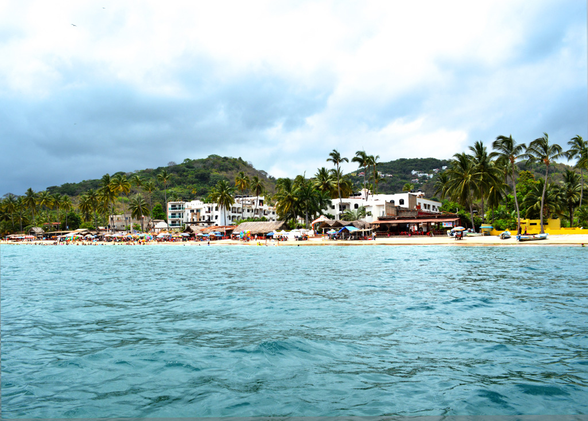
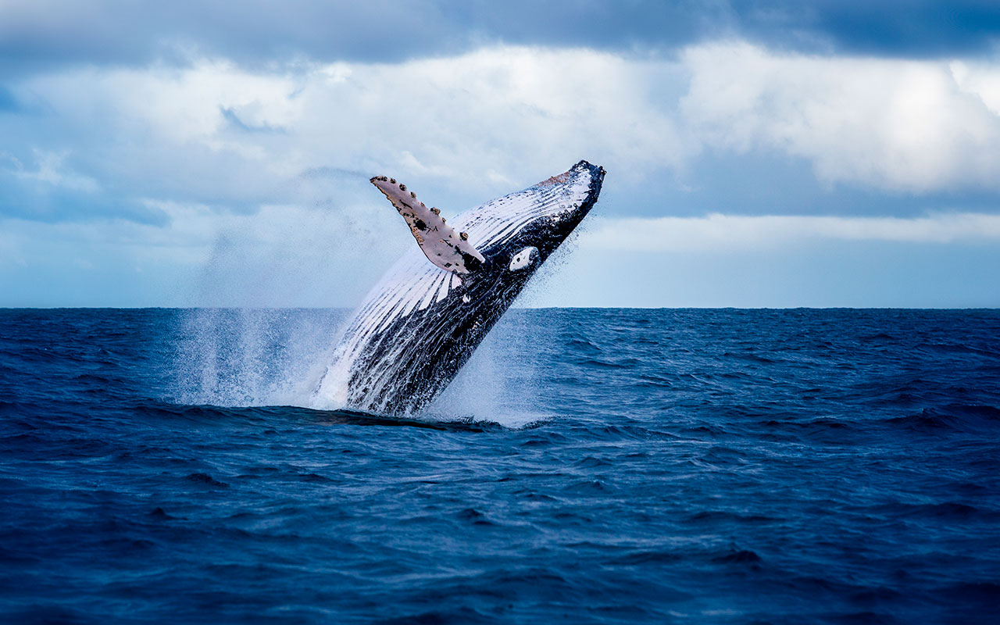
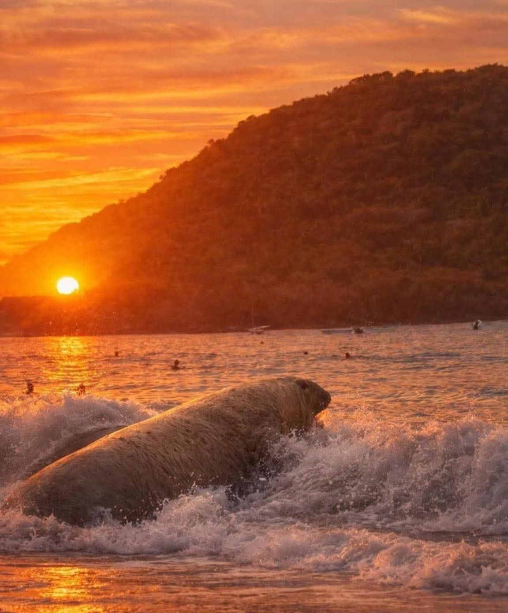
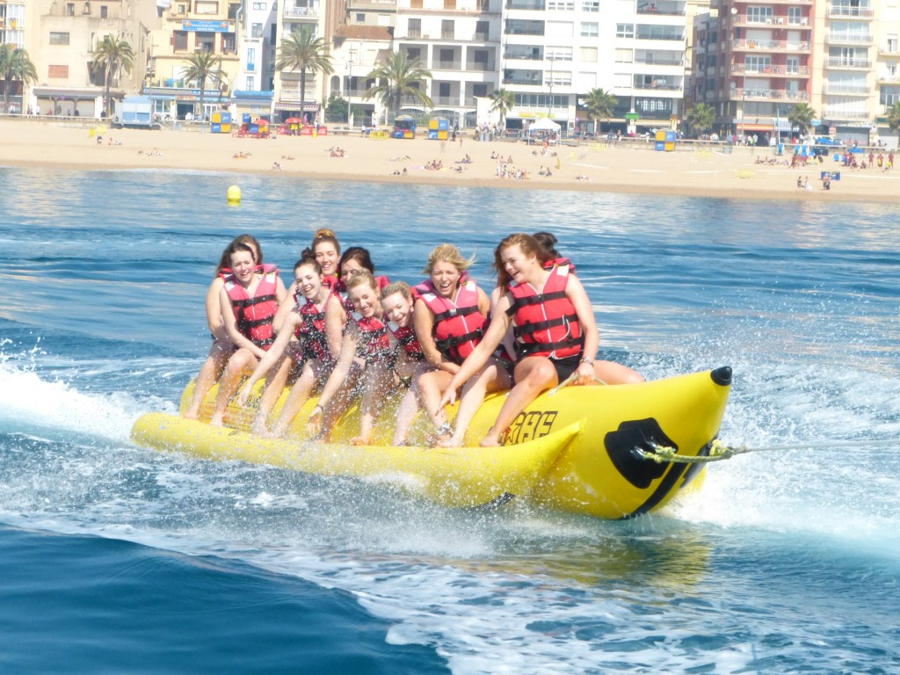
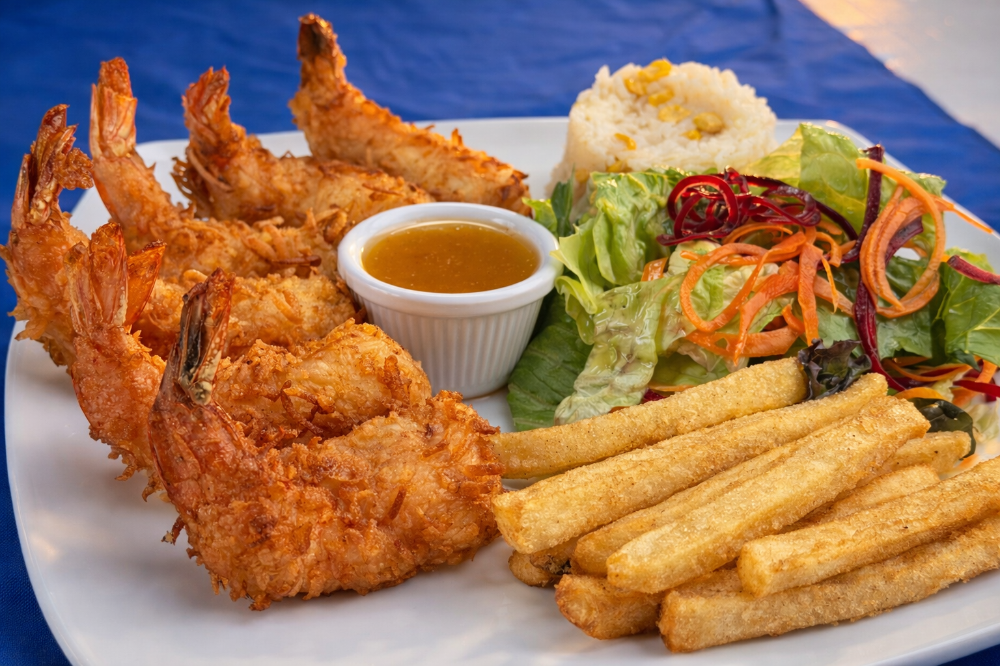

Descubre la "Alberca Gigante de México"
Descubre la "Alberca Gigante de México"
Conocido cariñosamente como "La Alberca Gigante de México", Rincón de Guayabitos es una bahía de aguas cristalinas y oleaje suave que se extiende por 2 kilómetros de arena dorada.
Es el corazón de la Riviera Nayarit para familias que buscan seguridad, gastronomía deliciosa y un ambiente vibrante. Aquí el tiempo se detiene entre palmeras y atardeceres inolvidables.





Aventura y relajación en un solo lugar
2 km de playa certificada "Blue Flag", perfecta para caminar, nadar y construir castillos de arena.
Toma una lancha y descubre esta reserva ecológica. Aguas turquesas ideales para el snorkel.
Participa en torneos o simplemente disfruta de un día de pesca de Dorado y Pez Vela.
En temporada, participa en la liberación de tortugas, una experiencia educativa inolvidable.
Visita el mercado para encontrar arte Huichol auténtico, plata y souvenirs coloridos.
Renta de Jet Sky, Paddle Board y la clásica "Banana" para diversión en grupo.
La gastronomía en Guayabitos es una fiesta de mariscos frescos. No te puedes perder el pescado zarandeado, una especialidad nayarita.

Junio - Agosto
26°C - 28°C Promedio
Familias y Niños
Hoteles y Bungalows
Rincón de Guayabitos te espera con los brazos abiertos.
Ver en Google Maps